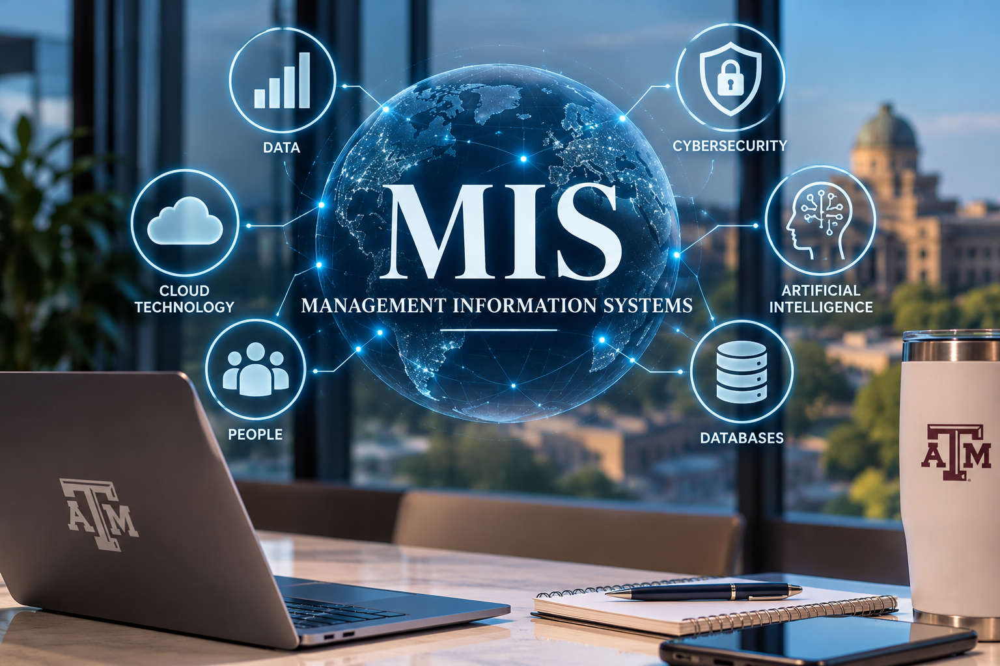

MIS & AI Ethics
Website Overview
Cat Selman
October 12, 2026
Home |
AI Usage |
Security |
About Us

Management Information Systems (MIS) help businesses use technology to organize information and make better decisions.
This website explores how technology supports businesses and their daily operations.
It introduces important MIS topics, including cybersecurity, databases, and artificial intelligence.
It also explains how organizations use data to solve problems and improve efficiency.
The website discusses the ethical use of AI and ways to protect information from cyber threats.
Learning about these topics helps students understand the connection between business and technology.
To learn more, visit
Gartner,
MIT Sloan Ideas Made to Matter,
and CISA.
Management Information Systems (MIS) combine business practices and technology to help organizations manage information and make informed decisions. Responsible technology use is important because businesses rely on accurate data. Artificial intelligence can help people analyze information, but users must check its accuracy. Cybersecurity helps protect sensitive information from unauthorized access. Ethical decisions are essential when using technology in school and business.
MIS Topics
| MIS Topic Name |
Description / Purpose |
| Artificial Intelligence (AI) |
AI helps organizations analyze information, automate tasks, and support decision-making. |
| Cybersecurity |
Cybersecurity protects computer systems, networks, and sensitive information from digital threats. |
| Database Management |
Database management organizes, stores, and retrieves information so organizations can use it efficiently. |
|